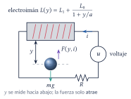
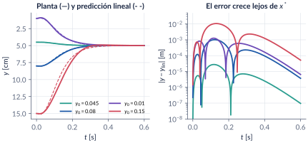
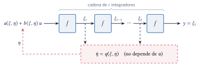
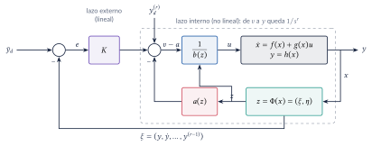
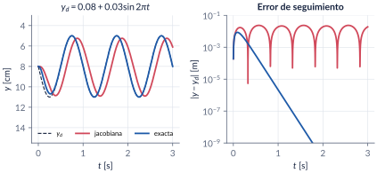
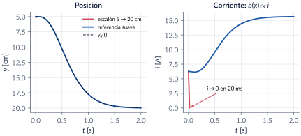
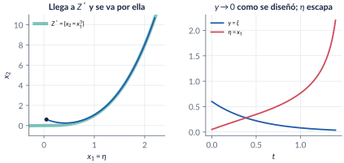
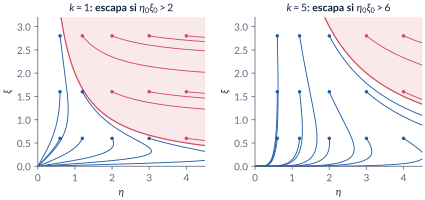

12. Linealización por retroalimentación
Semanas 14–15 · dos clases
Hasta aquí, cada herramienta de diseño fue una función de energía. Esta parte cambia de filosofía: buscar un cambio de coordenadas y una realimentación que vuelvan lineal un sistema no lineal, de manera exacta, y luego usar todo lo que se sabe de control lineal. Funciona para sistemas afines en la entrada, y tiene tres precios que hay que saber pagar: una parte del sistema queda invisible desde la salida (la dinámica cero), la cancelación exige conocer el modelo y la ley puede pedir esfuerzos infinitos.
Al terminar esta parte usted podrá
- Diseñar un controlador sobre la linealización jacobiana, con y sin acción integral, y decir qué garantiza y qué no.
- Calcular derivadas de Lie, reconocer un difeomorfismo local (y uno que no es global) y escribir un sistema afín en coordenadas nuevas.
- Calcular el grado relativo de una salida, reconocer los puntos donde no está definido y llevar el sistema a la forma normal.
- Diseñar la ley que linealiza el mapa de la entrada a la salida, y un lazo externo lineal para estabilizar y para seguir referencias.
- Calcular la dinámica cero, decidir si un sistema es de fase mínima y concluir estabilidad local; saber qué más hace falta para un resultado global.
- Reconocer los límites de la cancelación: singularidades, error de modelo, no linealidades que ayudan.
Ruta de las clases
| Clase | Qué se ve | Capítulo | Scripts |
|---|---|---|---|
| 1 | Levitador: diseño sobre la jacobiana y control integral. Cancelar en vez de aproximar (péndulo). Derivadas de Lie, difeomorfismos, grado relativo, forma normal | §12.1–12.6 | C12_Ej1–C12_Ej7 |
| 2 | Linealización entrada–salida y lazo externo. Levitador exacto: seguimiento, singularidad, robustez. Dinámica cero, fase mínima, estabilidad local y global, puente con pasividad | §12.7–12.10 | C12_Ej8–C12_Ej12, crearModelo_LevitadorFL |
Lo esencial, en una página

Trampa: “diseñé los polos; la respuesta es la que calculé”
Sobre la linealización jacobiana, \(u=u^*-K(x-x^*)\) da estabilidad local: el teorema no dice desde dónde converge ni cuánto se parece la respuesta a la lineal. Con el mismo \(K\), la esfera que empieza a 4.5 cm sigue la predicción lineal con un error de \(3\times10^{-5}\) m; la que empieza a 15 cm se separa 1 cm y pide 30 V.

Derivada de Lie y grado relativo
Para \(\dot x=f(x)+g(x)u\), \(y=h(x)\): \(L_f\lambda=\frac{\partial\lambda}{\partial x}f\) es la derivada de \(\lambda\) a lo largo de las soluciones (para una función de Lyapunov, \(\dot V=L_fV\)). El sistema tiene grado relativo \(r\) en \(x^o\) si \(L_gL_f^ih\equiv0\) cerca de \(x^o\) para \(i\le r-2\) y \(L_gL_f^{r-1}h(x^o)\neq0\): es el número de veces que hay que derivar \(y\) para que aparezca \(u\), \[y^{(r)}=L_f^rh(x)+L_gL_f^{r-1}h(x)\,u .\] En un sistema lineal, \(r\) es el exceso de polos sobre ceros de \(G(s)\).
Trampa: el grado relativo puede no existir
En el levitador con \(y\) = posición, \(r=3\), pero \(L_gL_f^2h\propto i\): en corriente cero el grado relativo no está definido. No es un detalle matemático: el electroimán solo atrae, y sin corriente la entrada no mueve la aceleración.

Linealización entrada–salida (Isidori, §4.2)
En coordenadas \(z=\Phi(x)=(\xi,\eta)\), con \(\xi=(h,L_fh,\dots,L_f^{r-1}h)\) y \(L_g\eta=0\), el sistema es \(\dot\xi_1=\xi_2,\ \dots,\ \dot\xi_r=a(z)+b(z)u\), \(\dot\eta=q(\xi,\eta)\), \(y=\xi_1\). La ley \[u=\frac{1}{L_gL_f^{r-1}h(x)}\Bigl[-L_f^rh(x)+v\Bigr]\] deja \(y^{(r)}=v\): de \(v\) a \(y\), una cadena de \(r\) integradores. Con \(v=y_d^{(r)}-K(\xi-\bar y_d)\), la salida sigue a \(y_d\) exponencialmente.


Trampa: la ley exacta no lleva la esfera a cualquier parte
Un escalón de 5 a 20 cm pide caer más rápido que \(g\); la ley apaga la corriente en 20 ms, \(b(x)\to0\) y \(u\to\infty\). Hay que planificar una referencia alcanzable (con un filtro \(6^4/(s+6)^4\) la corriente nunca baja de 6 A). Y exacta no es robusta: con la masa equivocada, la ley exacta sola queda peor que la jacobiana (1.96 cm contra 1.03 cm); el integrador lo arregla.

Dinámica cero y fase mínima (Byrnes e Isidori)
Forzar \(y\equiv0\) obliga a \(\xi\equiv0\) y a \(u=-a(0,\eta)/b(0,\eta)\); lo que queda libre es la dinámica cero \(\dot\eta=q(0,\eta)\), la restricción de \(f+gu^*\) a \(Z^*=\{h=L_fh=\dots=L_f^{r-1}h=0\}\). Si su equilibrio es asintóticamente estable, el sistema es de fase mínima. En un sistema lineal, sus valores propios son los ceros de \(G(s)\).
Trampa: si \(y\to0\), el sistema está estabilizado
Para \(\dot x_1=x_1+x_2\), \(\dot x_2=3x_1^2x_2+x_1+u\), \(y=-x_1^3+x_2\), la ley linealizante lleva \(y\) a cero como \(e^{-2t}\). Pero la dinámica cero es \(\dot\eta=\eta+\eta^3\): la trayectoria cae a \(\{x_2=x_1^3\}\), se desliza por ella y escapa en tiempo finito.

Trampa: la dinámica cero “no es del sistema”
No depende de las coordenadas ni de la realimentación: no se puede cambiar con control. Sí depende de la salida: van der Pol con \(y=x_1\) no tiene dinámica cero; con \(y=x_1^2+x_2\) tiene \(\dot\eta=-\eta^2\) y no es de fase mínima.
Estabilidad: local y global
Si la dinámica cero es exponencialmente estable, la ley linealizante con \(v=-K\xi\) estabiliza localmente (el jacobiano del lazo es triangular por bloques). Para un resultado global no basta que la dinámica cero sea globalmente estable: hace falta que \(\dot\eta=q(\xi,\eta)\) sea ISS respecto a \(\xi\). Y un sistema se puede volver pasivo por realimentación si y solo si tiene grado relativo uno y es de fase mínima débil (Byrnes, Isidori y Willems).

Trampa: linealizar es cancelar todo
En \(\dot x=x-x^3+u\), cancelar \(-x^3\) (con \(u=x^3-2x\)) pide \(u(0)=21\) desde \(x(0)=3\) y gasta 12.7 veces más energía de control que \(u=-2x\), que conserva el término que ya estabilizaba, para converger más lento.
Explorador interactivo
Cuatro pestañas con los modelos del capítulo. Todo se calcula en su navegador con Runge–Kutta de paso fijo (los mismos modelos de C12_Ej3, C12_Ej9, C12_Ej10, C12_Ej11 y C12_Ej12).
Retos con el explorador
- Péndulo: con la meta en 180°, ponga â = 8. ¿Queda error permanente? Ahora mueva la meta a 90°. ¿Por qué cambia la respuesta?
- Péndulo: suba el polo doble a 6. ¿Qué le pasa a la ley jacobiana desde la posición colgante? ¿Y a la exacta?
- Levitador: suba la frecuencia hasta que la aceleración pedida pase de \(g\). ¿Qué le pasa a la corriente de la ley exacta?
- Levitador: con la masa real en 0.12 kg, ¿cuál ley sigue mejor? ¿Por qué la exacta no queda perfecta?
- Dinámica cero: en el caso lineal, mueva los parámetros hasta que \(\alpha+\beta\) cambie de signo. ¿Cambia \(y\)? ¿Qué cambia?
- Escape sin ISS: con \(k=1\), busque la frontera del escape. Suba \(k\) a 8: ¿desaparece la región que escapa?
Códigos de esta parte
Los bloques salen directamente de los archivos del repositorio. Ejecute antes iniciarCurso. verificarCap12 comprueba los números del capítulo (37/37). Ningún script necesita toolboxes: la ubicación de polos usa ubicarPolos (fórmula de Ackermann, en comun/).
Equilibrio y linealización del levitador (§12.2).
yb = 0.05; % punto de operación [m]
[xs, us] = equilibrioLevitador(yb, P);
[A, B] = jacobianoLevitador(yb, P);
fprintf('equilibrio: x* = (%.3f, %g, %.4f), u* = %.4f V\n', xs, us);
fprintf('valores propios de A: %s\n', mat2str(eig(A).', 5));La promesa lineal contra la planta (§12.2).
Acl = A - B*K; t = linspace(0, 0.6, 1201);
opc = odeset('RelTol', 1e-9, 'AbsTol', 1e-11, 'MaxStep', 1e-3);
y0s = [0.045 0.08 0.01 0.15]; Y = zeros(numel(t), 4); YL = Y;
for j = 1:4
x0 = [y0s(j); 0; xs(3)];
[~, X] = ode45(@(t, x) modeloLevitador(x, us - K*(x - xs), P), t, x0, opc);
U = us - (X - xs.')*K.';
for i = 1:numel(t), d = expm(Acl*t(i))*(x0 - xs); YL(i, j) = d(1) + yb; end
Y(:, j) = X(:, 1);
fprintf('y0 = %.3f: max|y - y_lin| = %.2e m, max u = %5.2f V\n', y0s(j), max(abs(Y(:,j) - YL(:,j))), max(U));
endUna carga que el modelo no conoce: control integral (§12.2).
mReal = @(t) 0.10 + 0.02*(t >= 0.5); % la carga que el modelo no conoce
opc = odeset('RelTol', 1e-9, 'AbsTol', 1e-11, 'MaxStep', 1e-3);
t = linspace(0, 3, 3001);
[~, X1] = ode45(@(t, x) modeloLevitador(x, us - K*(x - xs), P, mReal(t)), t, xs, opc);
lazo = @(t, z) [modeloLevitador(z(1:3), us - K1*(z(1:3) - xs) - K2*z(4), P, mReal(t)); z(1) - yb];
[~, Z2] = ode45(lazo, t, [xs; 0], opc);
U1 = us - (X1 - xs.')*K.'; U2 = us - (Z2(:,1:3) - xs.')*K1.' - K2*Z2(:,4);
fprintf('error final: estados = %.4f cm, integral = %.1e m\n', 100*(X1(end,1) - yb), Z2(end,1) - yb);
fprintf('voltaje final con integrador = %.4f V; R x3* con m = 0.12: %.4f V\n', U2(end), ...
P.R*sqrt(2*P.g*0.12/(P.L0*P.a))*(P.a + yb));El péndulo: cancelar contra aproximar (§12.3).
a = 10; b = 1; c = 10; k1 = 4; k2 = 3; d = pi; % a = g/l, b = k/m, c = 1/(m l^2)
uJac = @(x) (-(a + k1)*(x(1) - d) - k2*x(2))/c;
uExa = @(x) ( a*sin(x(1)) - k1*(x(1) - d) - k2*x(2))/c;
pend = @(u) @(t, x) [x(2); -a*sin(x(1)) - b*x(2) + c*u(x)];
opc = odeset('RelTol', 1e-11, 'AbsTol', 1e-12); t = linspace(0, 6, 1201);
[~, XJ] = ode45(pend(uJac), t, [0; 0], opc);
[~, XE] = ode45(pend(uExa), t, [0; 0], opc);
[~, E] = ode45(@(t, e) [e(2); -k1*e(1) - (b + k2)*e(2)], t, [-d; 0], opc);
pred = E(:, 1) + d;
fprintf('max|x1 - predicción|: exacta %.1e rad, jacobiana %.3f rad\n', ...
max(abs(XE(:,1) - pred)), max(abs(XJ(:,1) - pred)));Derivada de Lie: fórmula contra derivada medida (§12.4).
mu = 1; f = @(x) [x(2); -x(1) + mu*(1 - x(1)^2)*x(2)];
lam = @(x) (x(1)^2 + x(2)^2)/2;
t = linspace(0, 16, 1601); opc = odeset('RelTol', 1e-11, 'AbsTol', 1e-12);
[~, X] = ode45(@(t, x) f(x), t, [0.2; 0], opc);
L = mu*(1 - X(:,1).^2).*X(:,2).^2; % fórmula
lamt = 0.5*sum(X.^2, 2); dlam = gradient(lamt, t(2) - t(1)); % derivada medida
Lnum = arrayfun(@(i) derivadaLie(f, lam, X(i,:).'), (1:numel(t)).');
fprintf('max|d lambda/dt - L_f lambda| = %.1e (diferencias en el tiempo)\n', max(abs(dlam(3:end-2) - L(3:end-2))));
fprintf('max|L_f lambda numérica - fórmula| = %.1e\n', max(abs(Lnum - L)));Jacobiano no singular, función no inyectiva (§12.4).
Psi = @(x) exp(x(1))*[cos(x(2)); sin(x(2))];
dPsi = @(x) exp(x(1))*[cos(x(2)) -sin(x(2)); sin(x(2)) cos(x(2))];
fprintf('det dPsi/dx en (0.3, 1) = %.4f = e^0.6 = %.4f\n', det(dPsi([0.3; 1])), exp(0.6));
fprintf('|Psi(0,0) - Psi(0,2 pi)| = %.1e: no es uno a uno\n', norm(Psi([0; 0]) - Psi([0; 2*pi])));
fprintf('Psi(-30, 0) = %.1e: Psi no es propia (x1 -> -inf lleva a 0)\n', norm(Psi([-30; 0])));Grado relativo: parámetros de Markov (§12.5).
% realizaciones en forma canónica controlable: (num, den) -> (A, B, C)
G = {[1], [1 1]; [1], conv([1 1], [1 1]); [1], conv([1 1], conv([1 1], [1 1])); [1 2], conv([1 1], [1 3])};
tl = logspace(-4, -2, 20); r = zeros(1, 4); pend = r;
for j = 1:4
num = G{j, 1}; den = G{j, 2}; n = numel(den) - 1;
A = [zeros(n-1, 1) eye(n-1); -fliplr(den(2:end))]; B = [zeros(n-1, 1); 1];
C = zeros(1, n); C(1:numel(num)) = fliplr(num);
k = 0; while abs(C*A^k*B) < 1e-12, k = k + 1; end; r(j) = k + 1;
escalon = @(t) sum(arrayfun(@(k) C*A^(k-1)*B*t^k/factorial(k), 1:25)); % y = sum C A^(k-1) B t^k/k!
y = arrayfun(escalon, tl);
p = polyfit(log(tl), log(abs(y)), 1); pend(j) = p(1);
fprintf('G%d: Markov C A^k B = %s -> r = %d, pendiente log-log = %.3f\n', j, ...
mat2str(arrayfun(@(k) C*A^k*B, 0:n-1)), r(j), pend(j));
endLa forma normal es el mismo sistema (§12.6).
fx = @(t, x) [-x(1); x(1)*x(2); x(2)] + [exp(x(2)); 1; 0]*u(t);
Phi = @(x) [x(3); x(2); 1 + x(1) - exp(x(2))];
% forma normal: x1 = -1 + z3 + e^z2 en las coordenadas nuevas
fz = @(t, z) [ z(2);
(-1 + z(3) + exp(z(2)))*z(2) + u(t);
-(-1 + z(3) + exp(z(2)))*(1 + z(2)*exp(z(2))) ];
x0 = [0.3; -0.2; 0.5];
[~, X] = ode45(fx, t, x0, opc); [~, Z] = ode45(fz, t, Phi(x0), opc);
PX = cell2mat(arrayfun(@(i) Phi(X(i,:).').', (1:numel(t)).', 'UniformOutput', false));
fprintf('ejemplo 1: max|z(t) - Phi(x(t))| = %.1e\n', max(abs(Z(:) - PX(:))));La ley exacta (función).
function [u, xi, b] = leyExactaLevitador(x, yd, K, P)
% LEYEXACTALEVITADOR Linealización exacta del levitador (grado relativo r = n = 3).
% [u, xi, b] = leyExactaLevitador(x, yd, K, P)
% yd = [y_d, y_d', y_d'', y_d'''] (referencia y sus tres derivadas), K = [k1 k2 k3].
% xi = Phi(x) = [h; L_f h; L_f^2 h] = [posición; velocidad; aceleración]
% u = (v - L_f^3 h)/(L_g L_f^2 h), v = y_d''' - K (xi - yd(1:3))
% b = L_g L_f^2 h = -L0 a i/(m (a + y)^2 L(y)): se anula con la corriente.
x1 = x(1); x2 = x(2); x3 = x(3); c = P.L0*P.a/(2*P.m);
xi3 = P.g - P.k/P.m*x2 - c*x3^2/(P.a + x1)^2;
f3 = (-P.R*x3 + P.L0*P.a*x2*x3/(P.a + x1)^2)/P.L(x1);
Lf3 = 2*c*x3^2/(P.a + x1)^3*x2 - P.k/P.m*xi3 - 2*c*x3/(P.a + x1)^2*f3;
b = -P.L0*P.a*x3/(P.m*(P.a + x1)^2*P.L(x1));
yd = yd(:); xi = [x1; x2; xi3];
v = yd(4) - K(:).'*(xi - yd(1:3));
u = (v - Lf3)/b;
endVan der Pol linealizado (§12.7).
mu = 1; ton = 10;
u = @(t, x) (t >= ton)*(x(1) - mu*(1 - x(1)^2)*x(2) - 4*x(1) - 4*x(2));
vdp = @(t, x) [x(2); -x(1) + mu*(1 - x(1)^2)*x(2) + u(t, x)];
opc = odeset('RelTol', 1e-11, 'AbsTol', 1e-12, 'MaxStep', 0.01);
t1 = linspace(0, ton, 1001); t2 = linspace(ton, 16, 601);
[~, X1] = ode45(vdp, t1, [0.5; 0], opc); % libre
[~, X2] = ode45(vdp, t2, X1(end,:).', opc); % con la ley
[~, E] = ode45(@(t, e) [e(2); -4*e(1) - 4*e(2)], t2, X1(end,:).', opc);
U = arrayfun(@(i) u(t2(i), X2(i,:).'), 1:numel(t2));
fprintf('max|y - predicción lineal| = %.1e, max|u| = %.2f\n', max(abs(X2(:,1) - E(:,1))), max(abs(U)));Seguimiento: exacta contra jacobiana (§12.8).
[A, B] = jacobianoLevitador(0.05, P); K = ubicarPolos(A, B, [-20 -25 -30]);
Am = 0.03; w = 2*pi;
yd = @(t) [0.08 + Am*sin(w*t), Am*w*cos(w*t), -Am*w^2*sin(w*t), -Am*w^3*cos(w*t)];
c3 = sqrt(2*P.g*P.m/(P.L0*P.a)); % x3* = c3 (a + y)
xsRef = @(t) [0.08 + Am*sin(w*t); 0; c3*(P.a + 0.08 + Am*sin(w*t))]; % equilibrio en y_d(t)
uJac = @(t, x) P.R*[0 0 1]*xsRef(t) - K*(x - xsRef(t)); % u*(y_d) - K (x - x*(y_d))
t = linspace(0, 3, 3001); x0 = equilibrioLevitador(0.08, P);
[~, X1] = ode45(@(t, x) modeloLevitador(x, uJac(t, x), P), t, x0, opc);
[~, X2] = ode45(@(t, x) modeloLevitador(x, leyExactaLevitador(x, yd(t), KFL, P), P), t, x0, opc);
Yd = 0.08 + Am*sin(w*t(:)); k = t > 1;
fprintf('seguimiento, error máximo (t > 1): jacobiana %.2f cm, exacta %.1e m\n', ...
100*max(abs(X1(k,1) - Yd(k))), max(abs(X2(k,1) - Yd(k))));La singularidad y la referencia suave (§12.8).
p = 6; cf = poly(-p*ones(1, 4)); % filtro p^4/(s + p)^4 en forma de estados
Af = [zeros(3, 1) eye(3); -fliplr(cf(2:end))]; Bf = [0; 0; 0; p^4];
lazo = @(t, z) [modeloLevitador(z(1:3), leyExactaLevitador(z(1:3), z(4:7), KFL, P), P); Af*z(4:7) + Bf*0.2];
[t2, S2] = ode45(lazo, [0 2], [x0; 0.05; 0; 0; 0], odeset(opc, 'MaxStep', 2e-4));
fprintf('referencia suave: y(2) = %.5f m, corriente mínima %.3f A, max y_d'''' = %.3f m/s^2\n', ...
S2(end,1), min(S2(:,3)), max(S2(:,6)));Error de modelo e integrador (§12.8).
yb = 0.05; xs = equilibrioLevitador(yb, P); mReal = @(t) 0.10 + 0.02*(t >= 0.5);
kI = poly([-10 -15 -20 -30]); % [1 k3 k2 k1 k0]
xi3 = @(x) P.g - P.k/P.m*x(2) - P.L0*P.a*x(3)^2/(2*P.m*(P.a + x(1))^2);
vI = @(x, s) -(kI(5)*s + kI(4)*(x(1) - yb) + kI(3)*x(2) + kI(2)*xi3(x));
uI = @(x, s) leyExactaLevitador(x, [0 0 0 vI(x, s)], [0 0 0], P); % con K = 0: u = (v - Lf3)/b
t = linspace(0, 3, 3001);
[~, X3] = ode45(@(t, x) modeloLevitador(x, leyExactaLevitador(x, [yb 0 0 0], KFL, P), P, mReal(t)), t, xs, opc);
[~, Z4] = ode45(@(t, z) [modeloLevitador(z(1:3), uI(z(1:3), z(4)), P, mReal(t)); z(1) - yb], t, [xs; 0], opc);
fprintf('masa real 0.12 kg: error final %.2f cm (exacta sola), %.0e m (con integrador)\n', ...
100*(X3(end,1) - yb), Z4(end,1) - yb);La salida converge, el estado escapa (§12.9).
k = 2; u = @(x) -x(1) + 3*x(1)^3 - k*(-x(1)^3 + x(2));
lazo = @(t, x) f(x) + g(x)*u(x);
opc = odeset('RelTol', 1e-10, 'AbsTol', 1e-12, 'MaxStep', 0.005, 'Events', @(t, x) deal(abs(x(1)) - 2.2, 1, 0));
[t, X] = ode45(lazo, [0 10], [0.05; 0.6], opc);
y = -X(:,1).^3 + X(:,2);
fprintf('|eta| = 2.2 en t = %.3f s; en ese instante |y| = %.3f (y(0) = %.3f)\n', t(end), abs(y(end)), y(1));
fprintf('dinámica cero sola desde 0.05: escapa en t = %.3f s\n', log(1 + 1/0.05^2)/2);La dinámica cero son los ceros (§12.9).
t = linspace(0, 6, 601); casos = [1 -2; 2 -1]; X = cell(1, 2);
for j = 1:2
al = casos(j, 1); be = casos(j, 2);
u = @(x) -al*x(3) - 4*x(1) - 4*x(2);
[~, X{j}] = ode45(@(t, x) [x(2); al*x(3) + u(x); be*x(3) - u(x)], t, [1; 0; 0], opc);
fprintf('alpha + beta = %+d (cero de G en s = %+d): y(6) = %.1e, x3(6) = %.4g\n', al + be, al + be, ...
X{j}(end, 1), X{j}(end, 3));
endEscape sin ISS (§12.10).
tEsc = @(k, xi0, eta0) log((xi0/(k + 1))/(xi0/(k + 1) - 1/eta0))/(k + 1); % si eta0 xi0 > k + 1
k = 1; xi0 = 2; eta0 = 2;
opc = odeset('RelTol', 1e-10, 'AbsTol', 1e-12, 'Events', @(t, z) deal(z(2) - 1e6, 1, 0));
[t, Z] = ode45(@(t, z) [-k*z(1); -z(2) + z(2)^2*z(1)], [0 3], [xi0; eta0], opc);
fprintf('k = %g, xi0 = %g, eta0 = %g: fórmula t_e = %.4f s, simulación (eta = 1e6) %.4f s\n', ...
k, xi0, eta0, tEsc(k, xi0, eta0), t(end));
for k = [1 5]
[E0, X0] = meshgrid(linspace(0.5, 4, 8), linspace(0.4, 3, 7));
fprintf('k = %g: escapan %d de %d condiciones iniciales de la rejilla (eta0 xi0 > k + 1)\n', ...
k, sum(E0(:).*X0(:) > k + 1), numel(E0));
endNo cancelar lo que ayuda (§12.10).
t = linspace(0, 4, 4001); o = odeset('RelTol', 1e-11, 'AbsTol', 1e-12);
[~, xF] = ode45(@(t, x) x - x^3 + (x^3 - 2*x), t, 3, o); % cancela: x' = -x
[~, xC] = ode45(@(t, x) x - x^3 - 2*x, t, 3, o); % conserva: x' = -x - x^3
uF = xF.^3 - 2*xF; uC = -2*xC;
fprintf('u(0): cancela %g, conserva %g\n', uF(1), uC(1));
fprintf('int u^2 (0..4): cancela %.3f, conserva %.3f (razón %.1f)\n', trapz(t, uF.^2), trapz(t, uC.^2), ...
trapz(t, uF.^2)/trapz(t, uC.^2));
fprintf('x(1): cancela %.3f, conserva %.3f\n', xF(1001), xC(1001));El modelo se construye por código: ejecute el script y se crea, se simula y se compara con ode45.
LevitadorFL.slx: la ley exacta en un bloque MATLAB Function, con referencia filtrada y masa real ajustable.
%% crearModelo_LevitadorFL -- Construye "LevitadorFL.slx" (sección 12.8)
% Levitador magnético con la linealización exacta en el lazo:
% planta: x1' = x2, x2' = g - (k/m) x2 - L0 a x3^2/(2 m (a + x1)^2),
% x3' = (u - R x3 + L0 a x2 x3/(a + x1)^2)/L(x1)
% lazo interno: u = (v - L_f^3 h)/(L_g L_f^2 h) (bloque MATLAB Function con
% leyExactaLevitador.m, que debe estar en el path)
% lazo externo: v = y_d''' - K (xi - [y_d y_d' y_d'']) con K = [6000 1100 60]
% La referencia sale de un filtro p^4/(s + p)^4 (p = 6) que entrega y_d y sus tres
% derivadas: un escalón de 0.05 a 0.12 m se vuelve una maniobra que la planta puede
% hacer sin apagar la corriente. La masa de la planta (mPlanta) puede ser distinta
% de la del modelo (P.m): cámbiela a 0.12 para ver el error de modelo.
% USO 1) ejecute el script: crea, simula y compara con ode45;
% 2) cambie mPlanta, p o el escalón y vuelva a simular.
clear; clc;
P = parametrosLevitador(); KFL = [6000 1100 60]; p = 6; y0 = 0.05; yf = 0.12; mPlanta = P.m;
x0 = equilibrioLevitador(y0, P);
vars = {'P', 'KFL', 'p', 'y0', 'yf', 'mPlanta', 'x0'};
for i = 1:numel(vars), assignin('base', vars{i}, eval(vars{i})); end
mdl = 'LevitadorFL';
if bdIsLoaded(mdl), close_system(mdl, 0); end
new_system(mdl); open_system(mdl);
blk = @(tipo, nombre, varargin) add_block(tipo, [mdl '/' nombre], varargin{:});
lin = @(desde, hasta) add_line(mdl, desde, hasta, 'autorouting', 'on');
% referencia: escalón filtrado por p^4/(s+p)^4, en forma de estados -> [yd; yd'; yd''; yd''']
blk('simulink/Sources/Step', 'escalón', 'Time', '0', 'Before', 'y0', 'After', 'yf', 'Position', [20 40 50 70]);
cf = poly(-p*ones(1, 4)); Af = [zeros(3, 1) eye(3); -fliplr(cf(2:end))]; assignin('base', 'Af', Af);
blk('simulink/Continuous/State-Space', 'filtro', 'A', 'Af', 'B', '[0;0;0;p^4]', 'C', 'eye(4)', ...
'D', 'zeros(4,1)', 'InitialCondition', '[y0;0;0;0]', 'Position', [90 30 190 80]);
% controlador: MATLAB Function que llama a leyExactaLevitador
blk('simulink/User-Defined Functions/MATLAB Function', 'ley exacta', 'Position', [250 40 370 110]);
cod = sprintf(['function u = ley(x, yd)\n' ...
'%%#codegen\n' ...
'coder.extrinsic(''leyExactaLevitador'', ''parametrosLevitador'');\n' ...
'u = 0;\n' ...
'u = leyExactaLevitador(x, yd, [6000 1100 60], parametrosLevitador());\n']);
rt = sfroot; ch = rt.find('-isa', 'Stateflow.EMChart', 'Path', [mdl '/ley exacta']); ch.Script = cod;
% planta: MATLAB Function con modeloLevitador e integrador vectorial
blk('simulink/User-Defined Functions/MATLAB Function', 'levitador', 'Position', [430 40 550 110]);
cod2 = sprintf(['function dx = planta(x, u, mPlanta)\n' ...
'%%#codegen\n' ...
'coder.extrinsic(''modeloLevitador'', ''parametrosLevitador'');\n' ...
'dx = zeros(3,1);\n' ...
'dx = modeloLevitador(x, u, parametrosLevitador(), mPlanta);\n']);
ch2 = rt.find('-isa', 'Stateflow.EMChart', 'Path', [mdl '/levitador']); ch2.Script = cod2;
blk('simulink/Sources/Constant', 'masa real', 'Value', 'mPlanta', 'Position', [370 130 410 150]);
blk('simulink/Continuous/Integrator', 'x', 'InitialCondition', 'x0', 'Position', [600 60 630 90]);
blk('simulink/Signal Routing/Demux', 'demux', 'Outputs', '3', 'Position', [670 50 675 100]);
blk('simulink/Signal Routing/Demux', 'demux ref', 'Outputs', '4', 'Position', [230 140 235 200]);
blk('simulink/Signal Routing/Mux', 'mux y yd', 'Inputs', '2', 'Position', [720 130 725 170]);
blk('simulink/Sinks/Scope', 'y y yd', 'Position', [760 135 790 165]);
blk('simulink/Sinks/To Workspace', 'a workspace', 'VariableName', 'sal', 'SaveFormat', 'Array', 'Position', [760 190 830 210]);
blk('simulink/Sinks/To Workspace', 'corriente', 'VariableName', 'corr', 'SaveFormat', 'Array', 'Position', [760 230 830 250]);
lin('escalón/1', 'filtro/1');
lin('x/1', 'ley exacta/1'); lin('filtro/1', 'ley exacta/2');
lin('x/1', 'levitador/1'); lin('ley exacta/1', 'levitador/2'); lin('masa real/1', 'levitador/3');
lin('levitador/1', 'x/1'); lin('x/1', 'demux/1');
lin('filtro/1', 'demux ref/1');
lin('demux/1', 'mux y yd/1'); lin('demux ref/1', 'mux y yd/2');
lin('mux y yd/1', 'y y yd/1'); lin('mux y yd/1', 'a workspace/1'); lin('demux/3', 'corriente/1');
try, Simulink.BlockDiagram.arrangeSystem(mdl); catch, end
set_param(mdl, 'StopTime', '2', 'Solver', 'ode45', 'RelTol', '1e-8', 'MaxStep', '1e-3');
save_system(mdl);
fprintf('Modelo %s.slx creado.\n', mdl);
salida = sim(mdl); sal = salida.get('sal'); corr = salida.get('corr');
fprintf('Simulink: y(2) = %.5f m (y_d(2) = %.5f), corriente mínima %.3f A\n', sal(end,1), sal(end,2), min(corr));
% comparación con ode45 (misma maniobra)
lazo = @(t, z) [modeloLevitador(z(1:3), leyExactaLevitador(z(1:3), z(4:7), KFL, P), P, mPlanta); Af*z(4:7) + [0;0;0;p^4]*yf];
[~, Z] = ode45(lazo, [0 2], [x0; y0; 0; 0; 0], odeset('RelTol', 1e-9, 'MaxStep', 1e-3));
fprintf('ode45: y(2) = %.5f m. Diferencia: %.1e m\n', Z(end,1), abs(Z(end,1) - sal(end,1)));Videos
Los videos se generan con los scripts de la tabla (MATLAB, VideoWriter).
| Video | Qué muestra | Script |
|---|---|---|
| V12.1 · Levitador | Dos levitadores siguen la misma referencia: jacobiana y exacta. | C12_Video_Levitador.m |
| V12.2 · Fase no mínima | La trayectoria cae a \(Z^*\) y se va por ella; \(y\to0\) mientras el control explota. | C12_Video_FaseNoMinima.m |
| V12.3 · Dinámica cero | En una superficie de dimensión dos, fase mínima contra fase no mínima. | C12_Video_DinamicaCero.m |
| V12.4 · Difeomorfismo | Una deformación global contra una función con jacobiano no singular que da dos vueltas. | C12_Video_Difeomorfismo.m |
Problemas
Los problemas del capítulo (§12.12) tienen cada uno una trampa; las soluciones seleccionadas están en §12.13 y las respuestas a las pausas al final del capítulo.